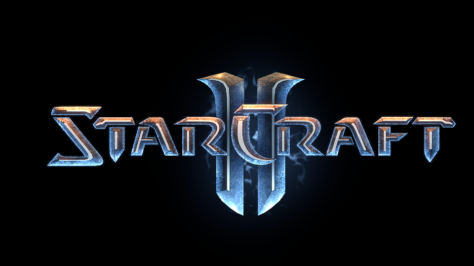

Referente asiático.

StarCraft II puede ser muchas cosas, pero en esencia es un feroz juego de estrategia que se basa en el juego competitivo de ritmo rápido. Con el apoyo de una comunidad de eSports dedicada que cuenta con jugadores y espectadores en todo el mundo, las partidas de StarCraft II se han convertido en emocionantes encuentros dentro de la escena profesional de los juegos.
Desarrollado por Blizzard Entertainment el primer juego de la serie StarCraft fue lanzado para Microsoft Windows el 31 de marzo de 1998.
La secuela del juego, StarCraft II: Wings of Liberty, fue lanzada en julio de 2010, con un paquete de expansión, StarCraft II: Heart of the Swarm, que fue lanzado el 11 de marzo del 2013.
"SoS" ganando el Mundial de 2003.
GameSpot describió StarCraft como "El juego de definición de su género. Es el estándar por el cual todos los juegos de estrategia en tiempo real son juzgados."10 IGN declaró que StarCraft "es, sin duda, uno de los mejores, si no el mejor, de los juegos de estrategia en tiempo real jamás creados."105 StarCraft se incluye frecuentemente en los mejores rankings de videojuegos de la industria, ya que, por ejemplo, ocupa el puesto 37 en los 100 mejores juegos de todos los tiempos de Edge.8 Incluso se lo ha tenido en el espacio, porque Daniel Barry llevó una copia del juego con él en la misión del transbordador espacial STS-96 en 1999.107 La gran popularidad de StarCraft logró la adjudicación de cuatro récords mundiales para videojuegos del Libro Guinness de los récords, incluyendo la "Mejor venta de un videojuego de estrategia para PC", "Ingresos más grande en el juego profesional" y "Mayor audiencia para un concurso de videojuegos", cuando 120.000 aficionados acudieron a ver el final de la temporada 2005 de Proleage SKY Proleague en Busan, Corea del Sur.108 Los investigadores han demostrado que la audiencia para ver partidas de StarCraft es diversa y que utiliza casos de información asimétrica para hacer el juego más entretenido para los espectadores.109 Además, StarCraft ha sido el tema de un curso académico; UC Berkeley ofreció un curso de introducción en teoría y estrategia del videojuego dirigido para los estudiante en la primavera de 2009.110 111 El verbo "zerg" ha entrado en el uso general estadounidense como un término de videojuegos para referirse a la táctica zerg de ir persiguiendo a un oponente con una gran fuerza de unidades débiles.
Después de su lanzamiento, StarCraft creció rápidamente en popularidad en Corea del Sur, haciendo su camino con el tiempo para convertirse en deporte nacional del país después de establecer una exitosa escena pro jugadora.113 Los jugadores profesionales en Corea del Sur son celebridades en los medios, y los videojuegos de StarCraft se emiten en más de tres canales de televisión dedicados a las competiciones de juego profesional.114 Los jugadores profesionales en Corea del Sur han ganado contratos de televisión, patrocinios y premios en torneos, lo que permitió a uno de los jugadores más famosos, Lim Yo-Hwan,115 tener un club de fanes de más de medio millón de personas.11 Uno de los jugadores, Lee Yun-Yeol, reportó ganancias en el 2005 de US$ 200.000 ($241.506 en 2014).
StarCraft fue parte del Curso Básico Aeroespacial de la Fuerza Aérea de los Estados Unidos, que se utilizaba para enseñar a los oficiales recién activos sobre la planificación de crisis bajo presión y el servicio conjunto en el trabajo en equipo.116 El ajuste de la ciencia ficción permitió a los estudiantes centrarse en las tácticas de batalla.
Dreamhack disputada en Europa en 2014.